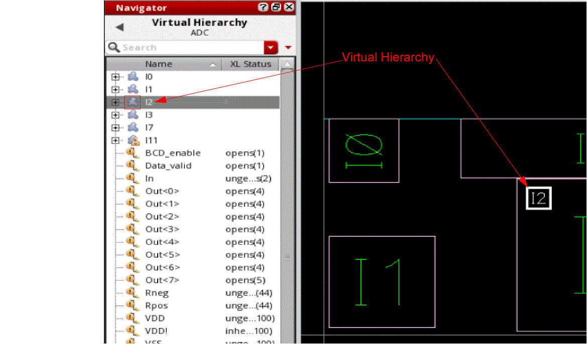

Accessing a Virtual Hierarchy
To access the generated virtual hierarchies and interface nets in the layout canvas:
-
In the Navigator assistant, select the Virtual Hierarchy data set.
The Navigator tree updates to display the available virtual hierarchies and the associated instances and nets. The virtual hierarchy is represented using an amoeba-shaped icon ( ), as displayed. If the virtual hierarchy is created as a group, it is represented in the Navigator using the group (
 )icon.
)icon.
 -
Click a virtual hierarchy in the Navigator tree.
The corresponding object is selected in the layout canvas. The Show Selection Info toolbar updates to display appropriate information related to the selected virtual group, such as display name, type of virtual group—Generated, Clone, or Created, placement status, and the display stop level value.
If a virtual pin is selected, the Show Selection Info toolbar updates to display the layer and net name on which the pin is created and the pin width and height. -
Click the (+) button adjacent to the virtual hierarchy icon in the Navigator tree to view the objects inside the virtual hierarchy.
The selected virtual hierarchy is expanded and the objects inside the hierarchy are listed in the Navigator tree, as displayed. In addition, the Navigator assistant displays the XL Status of the virtual hierarchy components.
A virtual hierarchy can also contain an instance (or more) of another virtual hierarchy as one of the components. Moving such a virtual hierarchy around the layout canvas displays flight lines on the canvas. If the virtual hierarchy you move is opaque, which means it has no contents, no flight line is generated for the virtual hierarchy. -
Click a virtual hierarchy component to view the corresponding layout representation on the canvas. If you select an interface net associated with a virtual hierarchy in the Navigator tree, Virtuoso Layout Suite EXL creates a probe highlighting all the associated instances and nets in the layout canvas, as displayed.
If you cross-select the schematic representation of a virtual hierarchy, the boundary of the virtual hierarchy is highlighted in the layout canvas. If the cross-selected virtual hierarchy is opaque, which means it has no contents, no highlights are created in the layout canvas. -
Right-click a virtual hierarchy in the Navigator tree to perform the operations supported through the shortcut menu.
The layout canvas updates in accordance with the selected operation.
Return to top